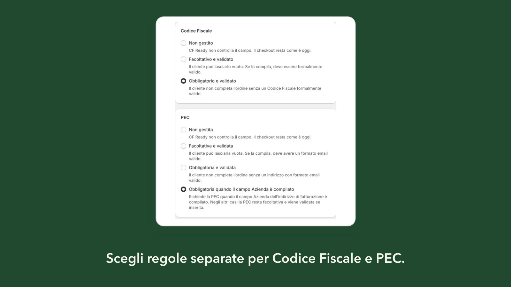

Il campo PEC nativo
La PEC usa uno dei campi fiscali nativi di Shopify, distinto dall’email dell’ordine e dal Codice Fiscale. È Shopify a decidere quando mostrarlo nel checkout: CF Ready non lo crea, non lo aggiunge al tema e non riutilizza “Interno”. Nella configurazione standard il campo è facoltativo, e il cliente può completare l’ordine lasciandolo vuoto.
CF Ready controlla questo campo nel checkout, con una regola indipendente da quella del Codice Fiscale.
PEC facoltativa o obbligatoria
Nell’app scegli come trattare la PEC: lasciarla com’è oggi, renderla facoltativa con un controllo formale, oppure obbligatoria per tutti i clienti o solo per chi compila il campo Azienda. In quest’ultimo caso gli altri clienti possono lasciarla vuota. Le regole valgono per gli ordini con consegna e fatturazione in Italia.
Il Codice Fiscale ha una regola sua. Puoi combinarle come preferisci: per esempio Codice Fiscale obbligatorio per tutti e PEC richiesta solo alle aziende.

Se e quando raccogliere la PEC lo decidi tu con il tuo commercialista: CF Ready ti permette di chiederla nel checkout, non stabilisce il trattamento fiscale dell’ordine.
Il controllo formale della PEC
Quando il cliente compila la PEC, CF Ready ne fa un controllo formale. Se l’indirizzo non va bene, il cliente vede il messaggio che hai scelto, in italiano o in inglese, e lo corregge prima di confermare l’ordine.
Il controllo non verifica che la casella esista o sia iscritta come PEC. Un indirizzo scritto bene non è detto che sia una PEC attiva. Se nel tuo negozio arrivano spesso email ordinarie al posto della PEC, scrivilo nel messaggio che scegli per il campo, per esempio ricordando che serve l’indirizzo PEC dell’azienda.
Cosa resta fuori
CF Ready gestisce solo Codice Fiscale e PEC. Non gestisce Partita IVA o Codice Destinatario, non emette fatture e non le invia allo SDI. Fa un controllo formale, non una verifica d’identità, e non conserva i dati dei clienti. Se ti servono Partita IVA o Codice Destinatario, valuta gli strumenti di fatturazione che usi già.
Come attivare la PEC obbligatoria per le aziende
- Nell’app scegli la regola della PEC.
- Scegli separatamente la regola del Codice Fiscale.
- Prova nel simulatore un cliente azienda senza PEC e una PEC scritta male.
- Salva le regole, poi attiva il controllo: sono due azioni separate.
- Completa un checkout di prova come cliente azienda e come privato.
Dopo l’ordine trovi la PEC insieme al Codice Fiscale nella pagina dei dettagli dell’ordine. Se vuoi indirizzi uniformi, l’app può uniformare maiuscole e minuscole negli ordini.
Domande frequenti
Con questa regola la PEC diventa obbligatoria per tutti i clienti?
No. Puoi richiederla solo ai clienti azienda e lasciarla facoltativa per tutti gli altri. Quando un cliente la inserisce, viene comunque controllata.
CF Ready verifica che la casella PEC esista?
No. Il controllo è formale: verifica che l’indirizzo sia scritto in una forma valida, non che la casella sia attiva o iscritta come PEC.
Posso richiedere la PEC senza richiedere il Codice Fiscale?
Sì. Codice Fiscale e PEC hanno regole indipendenti: puoi lasciare il Codice Fiscale non gestito o facoltativo e richiedere la PEC, o il contrario.